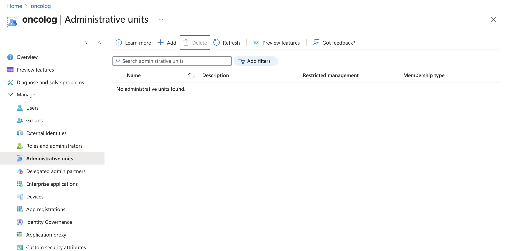
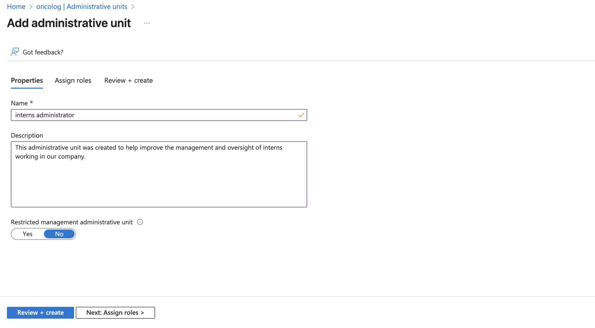
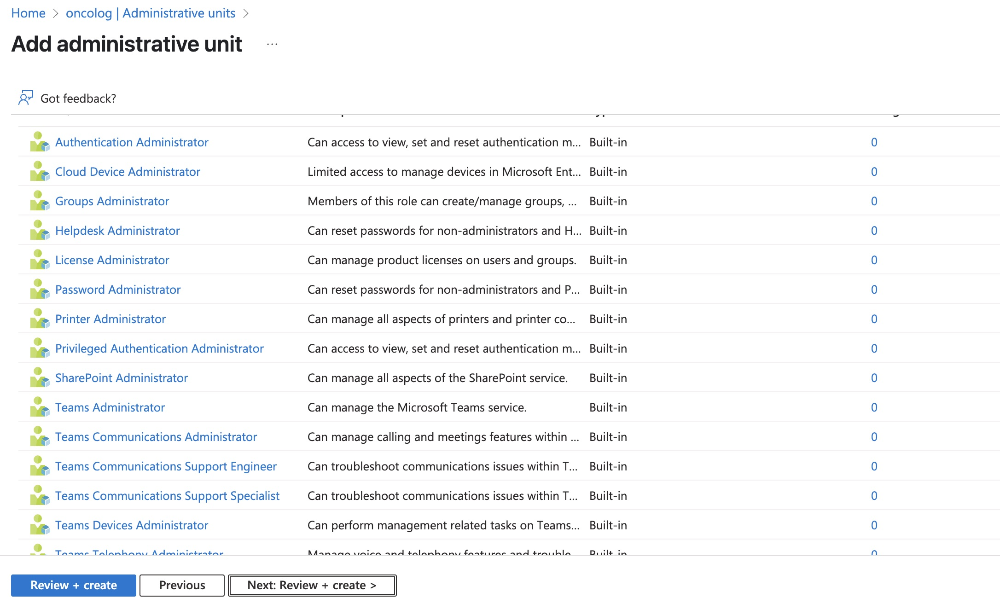
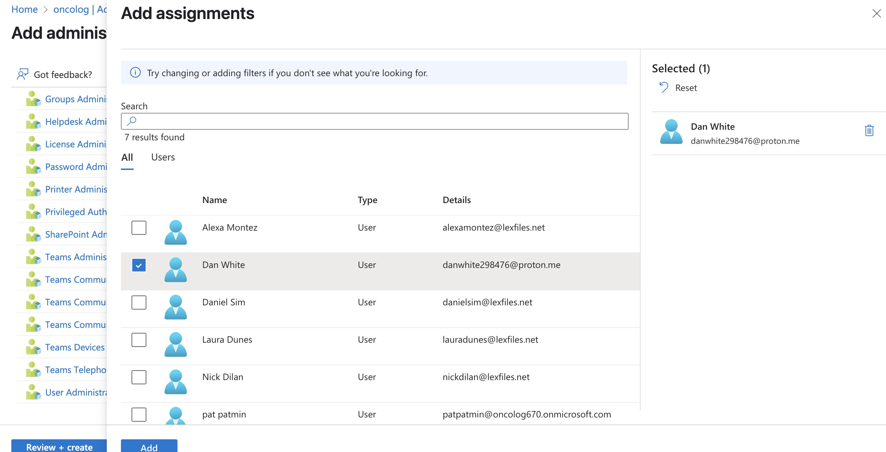
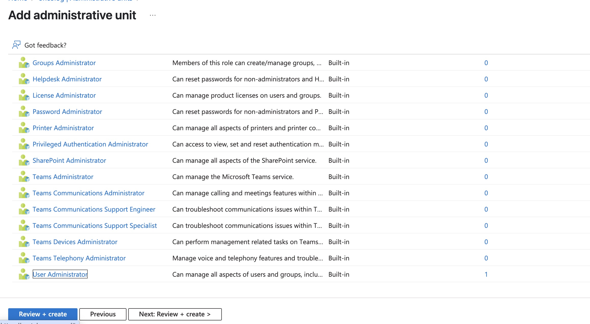
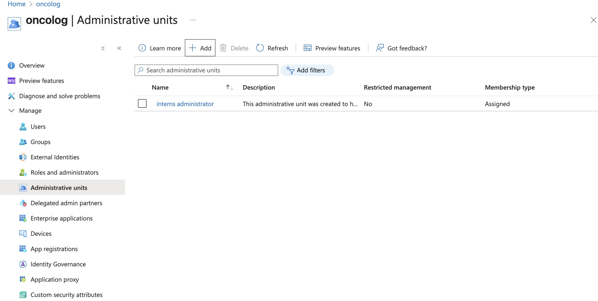

🧩 What Are Administrative Units?
Administrative Units (AUs) are containers in Azure AD that group users, groups, or devices together so that you can assign specific admins to manage only those objects — without giving them access to the entire directory.
Lets start creating our new administrative unit for this project. Click Add.
Name: Choose something clear and specific.
Description: Briefly explain the purpose of the unit.
When creating Administrative Units (AUs) — especially in platforms like Microsoft Entra ID (Azure Active Directory) — the options available during setup and management typically focus on organizing and scoping access and administration. These are some of the options.
We will choose Dan White to have control and administer the AU.
Lets choose User Administrator: A User Administrator assigned to an Administrative Unit (AU) has delegated permissions to manage only the users within that specific unit. This role is useful for organizations that want to delegate user management tasks without granting full access to the entire directory. However, this role is limited to the users inside the Administrative Unit. The User Administrator cannot make changes outside the scope of that unit or perform directory-wide actions. This scoped role helps organizations follow the principle of least privilege by ensuring administrators only have access to the users and data they are responsible for.
When scoped to an Administrative Unit, a User Administrator can:
Lets review all the information, and if we are shure, lets press create.
We can see our new Administration Unit, we just have created.
As an Azure Cloud Engineer, mastering Administrative Units (AUs) is more than just a checkbox in your learning path—it's a key to building secure, scalable, and efficient identity management in the cloud. Administrative Units in Microsoft Entra ID (formerly Azure Active Directory) allow you to create logical boundaries within your tenant, helping you organize users and delegate administrative tasks with precision. This is especially important in large or distributed organizations where not every admin should have access to every user.